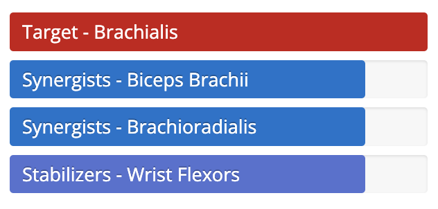
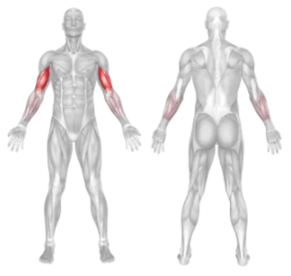

Setup
- Sit on a bench with your legs spread and feet flat on the floor.
- Hold a dumbbell in one hand and rest your elbow against the inside of your thigh.
- Let the dumbbell hang down with your arm fully extended.
- Keep your torso slightly leaned forward and your core engaged.
Execution
- Curl: Curl the dumbbell upward toward your shoulder while keeping your upper arm stationary.
- Squeeze: Contract your biceps at the top of the movement.
- Lower: Slowly lower the dumbbell back to the starting position under control.
- Repeat for the desired reps, then switch arms.
Tips for Effectiveness
- Keep Elbow Anchored: Your upper arm should remain firmly against your thigh throughout the movement.
- Slow Tempo: Avoid swinging or using momentum—focus on isolation and control.
- Full Range: Extend and contract your arm completely for maximum benefit.
Benefits of Concentration Curl
- Biceps Isolation: Minimizes involvement of other muscles, targeting the biceps directly.
- Mind-Muscle Connection: Promotes better focus and contraction of the working arm.
- Great for Symmetry: Helps develop equal strength and size in each arm.
Muscles Worked in Concentration Curl

